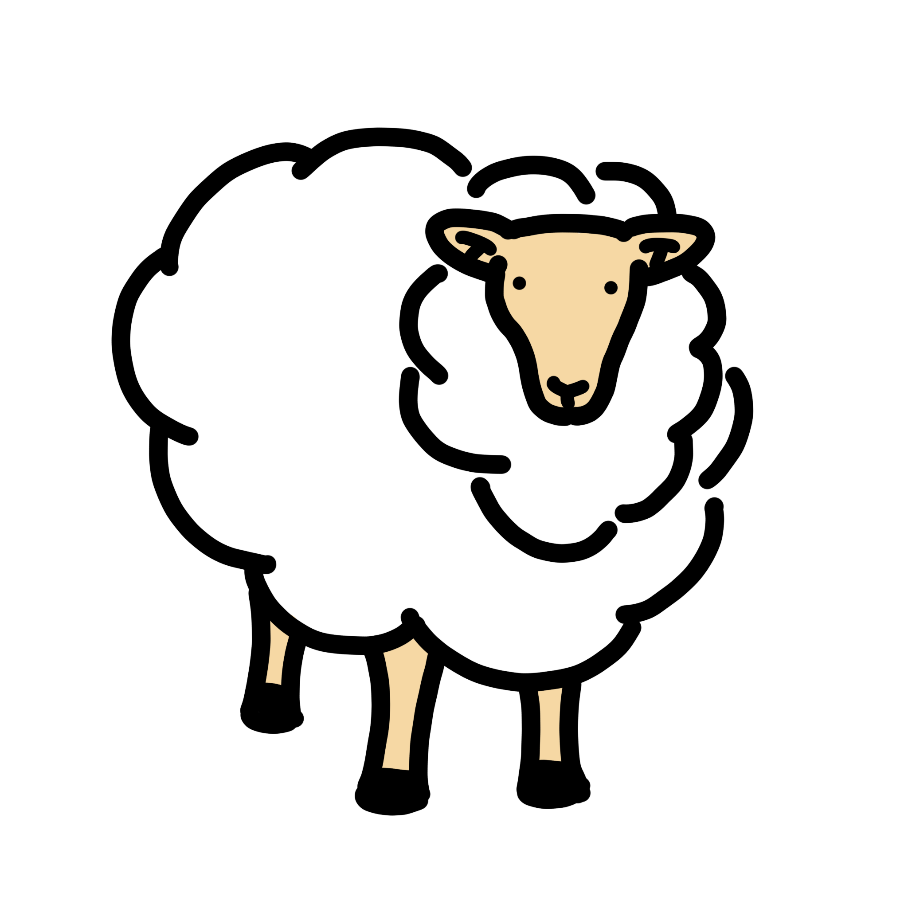

This is the main page of my website. This represents version 1.1 of the page. There is only one page, this one. And not much else here. Join me on the adventure of making a website! I can't promise how often updates will be made but stay tuned and we will see where this goes!
One interesting thing about trigonometry is the path it took from χορδή to ज्या, a quick hop onto अर्ध-ज्या before being shortened back to ज्या and the alternative pronunciation of jiva. Then it became جيب, then sinus, then finally sine.
